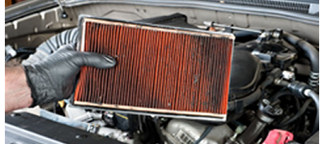
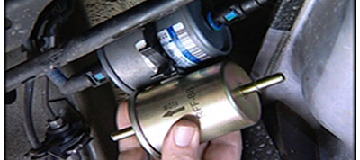
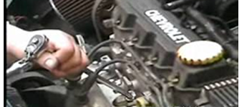
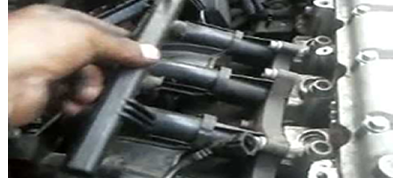
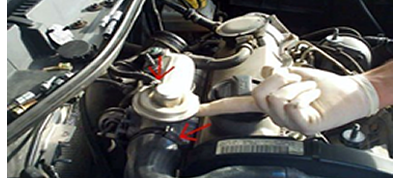

Los motores de combustión interna requieren de suficiente oxígeno para trabajar de manera adecuada. El filtro de aire debe ser capaz de eliminar el polvo existente en el aire permitiendo a su vez suficiente flujo de entrada al motor. La vida del filtro de aire depende considerablemente del ambiente de trabajo.
La gasolina puede ser contaminada durante el proceso de fabricación, transporte, almacenaje o bien dentro del mismo tanque de gasolina del vehículo. Los sistemas de inyección de gasolina actuales funcionan mediante inyectores de aperturas muy pequeñas las cuales pueden ser obstruidas por impurezas milimétricas.
Una de las maneras más económicas de mantener el motor de su vehículo trabajando eficientemente y evitar el desperdicio de combustible, es mediante el cambio de bujías a intervalos regulares. El intervalo de cambio de bujías depende del tipo de bujía y de la calidad de la gasolina principalmente.
El lavado de inyectores es crucial ya que la función de estos, es introducir combustible atomizado directamente al motor. Todas aquellas impurezas de la gasolina que no son eliminadas por el filtro de gasolina se van acumulando en los inyectores además, debido a que estos están ubicados cerca de las cámaras de combustión del motor.
PCV (Positive Crankcase Ventilation) o Ventilación Positiva del Carter. Esta válvula es la encargada de reciclar los gases generados en el interior del motor para que sean reingresados a las cámaras de combustión y no arrojados al medio ambiente como antes se acostumbraba. Esta válvula sufre carbonización por lo que su función se ve interrumpida.
Las partículas de aire sucio que llegan a pasar por el filtro de aire y la carbonización producida por calor, así como los gases introducidos por la válvula PCV tapan y atascan el funcionamiento de la garganta. Se recomienda realizar este servicio cada 10000 km.